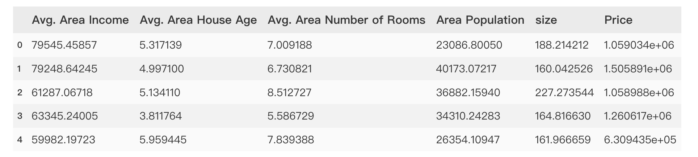

线性回归问题求解
损失函数公式
\[J(a,b)= {1\over 2m}\sum_{i=1}^m(\hat y^{(i)}-y^{(i)})^2 = {1\over 2m}\sum_{i=1}^m(ax_i+b-y_i)^2 = g(a, b) \]重复计算直到收敛（梯度下降）
设置两个临时变量
\[temp_a = a - \alpha{\delta\over \delta a}g(a,b) = a - \alpha{1\over m}\sum_{i=1}^m(ax_i+b-y_i)x_i \] \[temp_b = b - \alpha{\delta\over \delta b}g(a,b) = b - \alpha{1\over m}\sum_{i=1}^m(ax_i+b-y_i) \] \[a = temp_a \] \[b = temp_b \]\(\alpha\)是步长，\({\delta\over \delta b}g(a,b)\) 是损失函数，该方式就是找到损失函数最小值对应的a和b的值
Scikit-learn
地址
https://scikit-learn.org/stable/index.html
特点
- 集成了机器学习中各类成熟的算法，容易安装和适应，样例丰富，教程和文档也非常详细
- 不支持Python之外的语言，不支持深度学习和强化学习
调用Sklearn求解线性回归问题
\[y = 2x + 5 \]| X | Y |
|---|---|
| 1 | 7 |
| 2 | 9 |
| 3 | 11 |
| 4 | 13 |
| 5 | 15 |
使用方法
寻找a、b（y = ax + b）
from sklearn.linear_model import LinearRegression
lr_model = LinearRegression()
lr_model.fit(x,y)
展示a、b:
a = lr_model.coef_
b = lr_model.intercept_
对新的数据做预测:
predictions = lr_model.predict(x_new)
评估模型表现
\(y\)与\(\hat y\)的均方误差（MSE）：
\[MSE = {1\over m}\sum_{i=1}^m(\hat y-y)^2 \]均方误差（MSE）越小，模型拟合越好
R方值（\(R^2\)）:
\[R^2 = 1 - {\sum_{i=1}^m(\hat y_i-y_i)^2\over \sum_{i=1}^m(y_i-\overline y_i)^2} = 1 - {MSE \over 方差} \]\(R^2\)分数越接近1越好
使用方法
1.计算\(y\)与\(\hat y\)的均方误差（MSE）、R方值（R2_score）:
from sklearn.metrics import mean_squared_error,r2_socre
# y是实际的值，y_predict是预测值
MSE = mean_squared_error(y,y_predict)
R2 = r2_score(y,y_predict)
2.画图对比\(y\)与\(\hat y\)，可视化模型表现：
from matplotlib import pyplot as plt
plt.scatter(y, y_predict)
图形展示
画散点图
import matyplotlib.pyplot as plt
plt.scatter(x,y)
多张图同时展示
import matyplotlib.pyplot as plt
fig1 = plt.subplot(211)
plt.scatter(x1, y1)
fig2 = plt.subplot(212)
plt.scatter(x2, y2)
实战代码
使用线性回归预测房价，基于多因子预测
测试数据 
import pandas as pd
import numpy as np
from matplotlib import pyplot as plt
from sklearn.linear_model import LinearRegression
// 加载数据，并查看数据是否加载成功
data = pd.read_csv('usa_housing_price.csv');
data.head()
// 图形化展示数据
%matplotlib inline
// 创建一个10x10的画布
fig = plt.figure(figsize=(10,10))
// 绘制2行3列的第1个图
fig1 = plt.subplot(231)
// scatter表示绘制散点图
// Avg. Area Income是数据列名称
plt.scatter(data.loc[:,'Avg. Area Income'],data.loc[:,'Price'])
plt.title('Price VS Income')
fig2 =plt.subplot(232)
plt.scatter(data.loc[:,'Avg. Area House Age'],data.loc[:,'Price'])
plt.title('Price VS House Age')
fig3 =plt.subplot(233)
plt.scatter(data.loc[:,'Avg. Area Number of Rooms'],data.loc[:,'Price'])
plt.title('Price VS Number of Rooms')
fig4 =plt.subplot(234)
plt.scatter(data.loc[:,'Area Population'],data.loc[:,'Price'])
plt.title('Price VS Area Population')
fig5 =plt.subplot(235)
plt.scatter(data.loc[:,'size'],data.loc[:,'Price'])
plt.title('Price VS size')
plt.show()
// 获取多因子数据（除了房价，都是输入因子）
X_multi = data.drop(['Price'],axis=1)
// 实例化一个线性回归模型
LR_multi = LinearRegression()
// 训练模型，X_multi是多因子输入数据，y是结果数据
LR_multi.fit(X_multi,y)
// 使用模型预测多因子参数X_multi对应的预测结果数据
y_predict_multi = LR_multi.predict(X_multi)
// 检查模型效果, mse越小或r2越接近1，模型表现越好
mse = mean_squared_error(y,y_predict_multi)
r2 = r2_score(y,y_predict_multi)
// 数据新数据，获得预测结果
X_test = [65000,5,5,30000,200]
X_test = np.array(X_test).reshape(1,-1)
y_test_predict = LR_multi.predict(X_test)
print(y_test_predict)